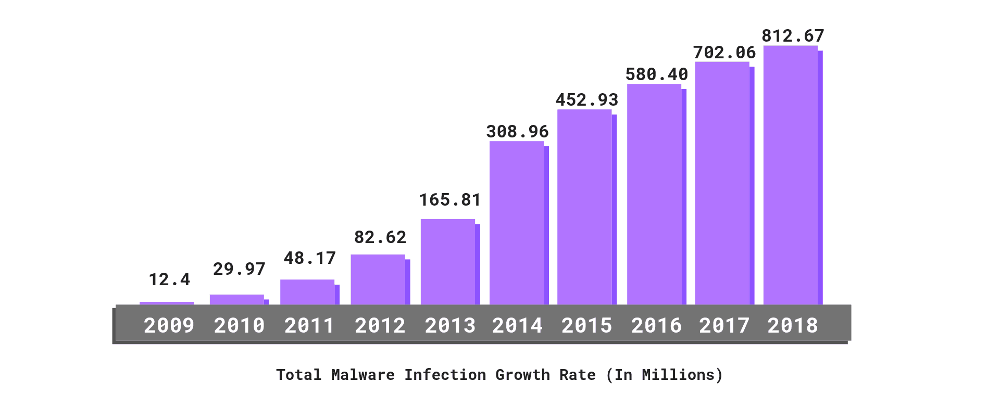

How THIS Website can actually open your senses about CyberAwareness
In this website we have included several content like flashcards,quizzes and even GAMES! to make you aware about CyberAwareness, CyberSecurity, and ways to save you from the Cyber Threats.
Why being Cyberaware is crucial at this time?
Being cyber aware is extremely important because when we are cyber security aware, it means we understand what cyber threats are and when we are aware, the potential impact of a cyber-attack on our computers drastically reduces.
Have you Heard about CyberSecurity Yet?
If no, Cybersecurity is the protection of internet-connected systems such as hardware, software and data from cyberthreats. The practice is used by individuals and enterprises to protect against unauthorized access to data centers and other computerized systems.
Here is a graph showing the Growth of Malware Infection in Devices
